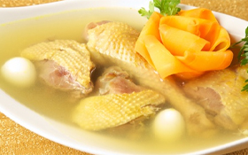
Răcitură de cocoş
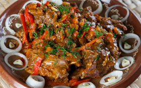
Iahnie ca la bulgari
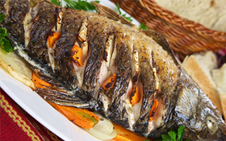
Peşte copt cu legume şi mirodenii
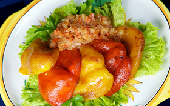
Ardei graşi ca acasă
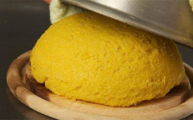
Mămăligă
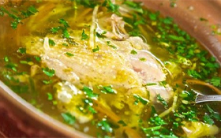
Zeamă de găină cu tăieţei de casă
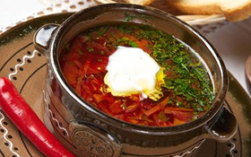
Borş ca acasă

Ciorbă ca la ţară
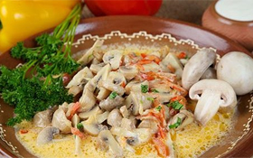
Tocană de ciuperci cu ardei graşi
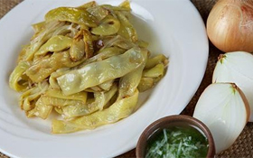
Fasole păstăi cu ceapă
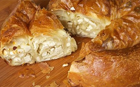
Învârtită cu brânză
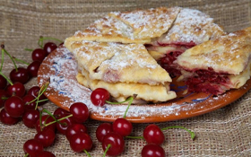
Plăcinte cu vișine
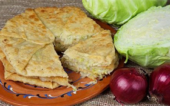
Plăcinte cu varză
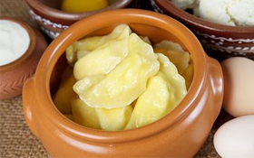
Colţunaşi cu brânză
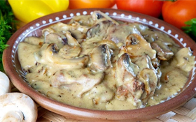
Ficat de găină în sos de smântână
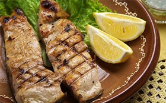
Carp la grătar
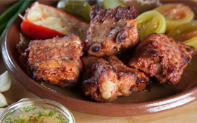
Costiţă de porc la grătar
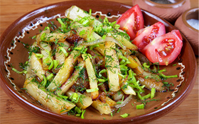
Cartofi prăjiţi cu ceapă
Vinete coapte umplute cu legume
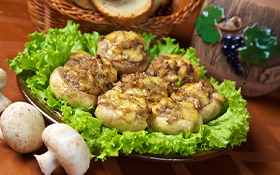